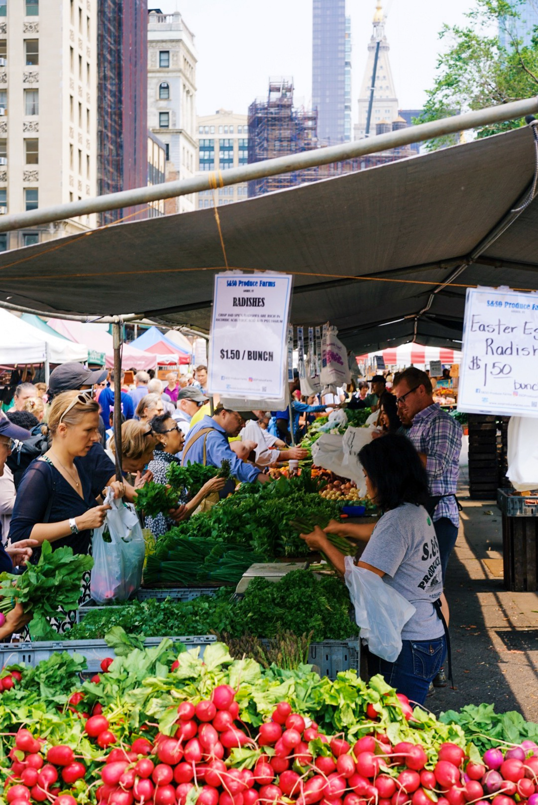
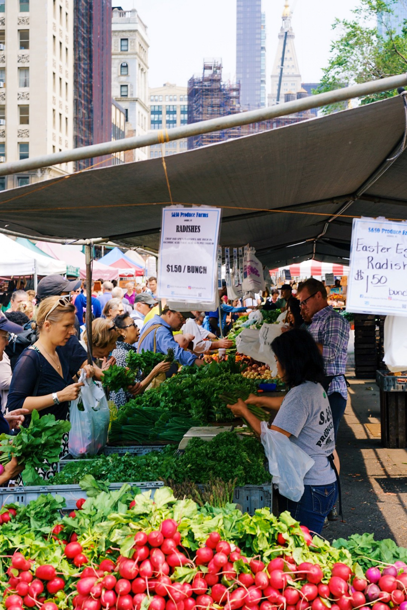

Agriculture: The Bedrock of Human Existence
Agriculture, often referred to as the backbone of civilization, stands as the enduring bedrock of human existence. From the dawn of humanity, when nomadic societies transitioned to settled communities, the cultivation of crops and domestication of animals marked the inception of an era that would shape the course of civilization.
At its essence, agriculture represents the symbiotic relationship between humans and the land they inhabit. It is not merely the act of sowing seeds or rearing livestock but a profound covenant with nature, fostering sustenance, growth, and prosperity. The transformation from hunter-gatherer societies to agricultural communities was a pivotal moment in our history, enabling the establishment of villages and the foundations of modern societies.
The significance of agriculture extends far beyond the mere production of food. It encompasses the very fabric of human life, influencing cultural practices, economic systems, and technological advancements. As societies embraced agriculture, surplus food production allowed for specialization, giving rise to artisans, traders, and the development of complex social structures.
In the contemporary world, agriculture remains paramount, supplying the sustenance that fuels our daily lives. Beyond its role in feeding the global population, agriculture contributes to economic stability, providing livelihoods for millions and fostering rural development. The cultivation of diverse crops and the breeding of resilient livestock contribute to biodiversity, ensuring the resilience of ecosystems and enhancing food security.
Yet, the challenges faced by agriculture in the 21st century are formidable. Climate change, resource depletion, and the pressures of a growing global population necessitate innovative and sustainable agricultural practices. Embracing agroecology, precision farming, and technological advancements, agriculture must evolve to meet the demands of a changing world while preserving the delicate balance between human activities and the environment.
In conclusion, agriculture stands as more than a means of sustenance; it embodies the enduring connection between humanity and the land. From the cradle of civilization to the challenges of the modern era, agriculture remains the bedrock of our existence—a testament to our ability to cultivate not only the land but also the seeds of progress, prosperity, and shared humanity.
Seeds of Sustainability: Resolutions for Nurturing Agriculture as the Bedrock of Human Existence
- Embrace sustainable agricultural practices for long-term environmental health.
- Advocate for inclusive and equitable access to agricultural resources and opportunities.
- Foster technological innovations to enhance agricultural productivity and efficiency.
- Promote education and awareness about the importance of sustainable agriculture.
- Encourage research and development in agroecology and precision farming.
- Collaborate on a global scale to address challenges such as climate change and resource depletion.
- Encourage responsible consumption and reduce food waste.
- Support initiatives that empower small-scale farmers and ensure their economic viability.
 
